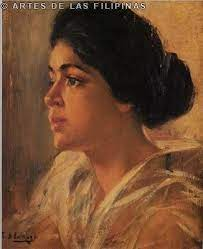
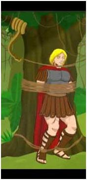
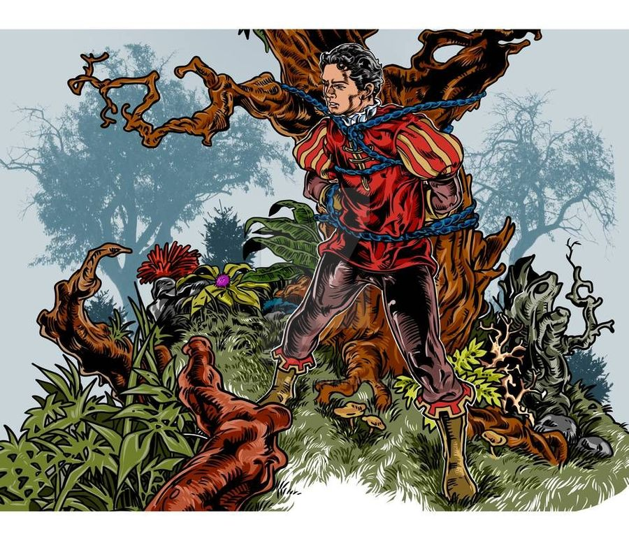
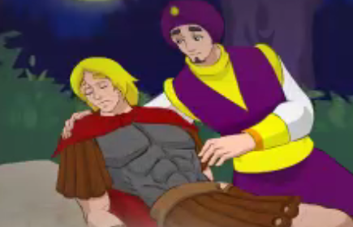
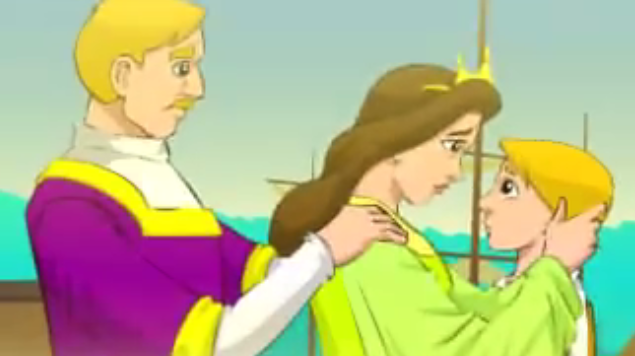
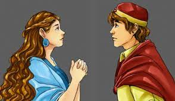
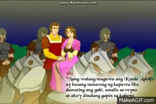
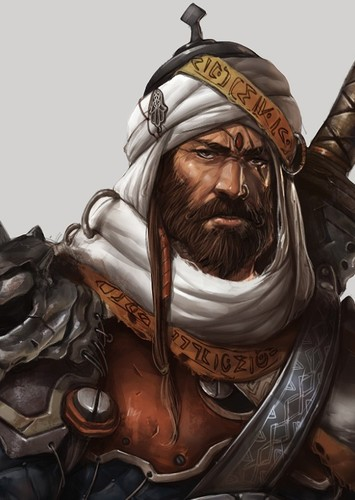
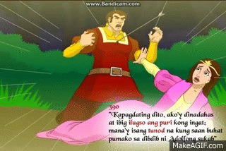
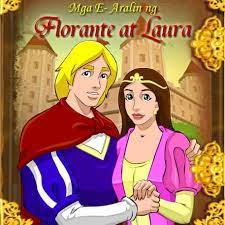

Florante At Laura
Fancisco Balagtas

Kilala din sa pangalang Francisco Baltazar. Isang makata at gumagawa din
ng mga tula. Isa sakanyang mga akda ay ang Florante At laura.
Aralin2
Kay selya
Mababasa sa mga saknong na ito ng pagbabalik tanaw ni Balagtas kay selya, Ang babaeng
kanyang minahal nya nang lubusan. Ngunit, naging pinakamalaking niya din itong kabiguan
sa pag ibig. Inilahad dito ang kanyang matamis na alaala nilang dalawa selya. Sa sobrang
kabiguan ni balagtas ay ninais nya na, mawala sa mundo. Subalit ang kabiguang ito ang
nagbigay inspirasyon sa kanya upang malikha ang kanyang walang kamatayang obra
maestra, ang florante at Laura.
Sa babasa nito

Mababasa sa mga saknong na ito ang paalala ni balagtas sa mga babasa ng kanyang
akda. Naghahabilin ito na pahalagahan at unawain ng mga mambabasa ang kabuuan at
mensahe ng akda.
Ang mga hinagpis ni florante
Dito ipinakilala ang pangunahing tauhan na si Florante. Isang matikas, magiting at
matapang na heneral ng Albanya si florante. Dito, ipinakita ang mahirap na sitwasyon ni
Florante sa kagubatan. Maririnig ang mga hiangpis ng binata dahil nasakop ng kanyang
kaaway na si Konde Adolfo ang kaharian ng Albanya. Nawalan na sya ng pag asa at pati sa
diyos ay na pahayag na nya ang kanyang hinagpis ant hinanakit sa pag aakala na siya ay
napabayaan na. Subalit sa huli ay kanyang napag isip isip na idadaan nalang nya sa
panalangin ang kanyang kaawa awang kalagayan.
Aralin 3
Inakala ni Aladin na nag-iisa Siya sa madilim at madawag na kagubatan subalit
di nagtagal ay narinig Niya Ang mga panaghoy ni florante. Hinanap at Nakita
Niya and binata ngunit Hindi Siya agad nilapitan. Ipinagpatuloy ni florante ang
kanyang panananghoy at dito nalaman ni Aladin ang kahabag-habag na paraan
na pagkamatay ng pinakamamahal na amang Duke Briseo sa kamay ni adolfo
gayundin ang paflorante sa pagmamahal,kabutihan,at kabaitan ng
kanyang ama sa kanya.
Pagkataos nito'y si Aladin Naman Ang nakaalala sa kanyang ama. Kabaliktaran ng kanyang amang su sultan Ali-Adab Ang ama ni florante. Naging malupit Ang kanyang ama kaya't pawang kalungkutan at pagdurusa Ang naranasan Niya sa piling ng ama. Hindi Siya nakalasap ng pagmamahal Mula sa magulang sapagkat Ang maaruga niyang Ina ay maaga ring pumanaw Ang sumunod na panaghoy ni florante ay pag tangis ng Pamamaalam. Nagsasabi Siya ng pamamaalam kay Laura nang biglang dumating Ang dalawang leong akmang sisila sa kanya. Subalit himalang huminto Ang mga ito at tila naawang tumitig at nakinig sa kanya. Nagpaalam din Siya sa bayan niyang Albanya. Nabanggit Niya Ang kanyang hinanakit sa pag-aakalang kinalimutan na Siya ng bayang ipinagtanggol Niya ng pauli-ulit laban sa mga kaaway, at ka'y Laura dahil naisip niyang tinalikuran na Siya ng iniibig sa harap ng nakaambang kamatayan Hindi na natiis ni Aladin ang matinding awa sa narinig kayat hinanap niya ang pinagmumulan ng panaghoy. Nang makita niyang isang Kristiyano pala ang nananaghoy (na kalabang mortal ng Morong tulad niya) ay nagdalawang-isip siya kung tutulong o hindi. Subalit saglit lang ang kanyang naging pag-aalinlangan dahil nakita niyang handa nang silain ng dalawang mababangis na leon ang kaawa-awang nakatali. Agad niyang sinugod at pinatay ang mga leon. Pagkatapos ay dali-dali niyang tinulungan ang binatang noon ay wala nang malay at tila isa nang bangkay. Inobserbahan niya ang mukha at dibdib nito upang matukoy kung humihinga pa. Nag alala man sa kalagayan ng binata, napayapa siya nang magsimula itong kumilos-hudyat na ito ay papagising na. Nang magising si Florante ay si Laura ang agad niyang hinanap Binagulat niyang siya'y nasa kandungan ng isang Morong itinuturing na kaaway ng kanyang lahi. Pinilit niyang bumangon subalit hindi pa niya kaya. Pinayapa siya ni Aladin at sinabing ligtas na siya. Naalala ni Florante ang dalawang leon at nasabing patay na siya marahil kung hindi sa pagdating ni Aladin. Tinanggap niya ang tulong ng isang "kaaway. Magdamag na hindi natulog si Aladin upang maalagaan at mabantayan si Florante mula sa mga hayop na gumagala sa gubat. Kinabukasa'y nagsimula nang manumbalik ang lakas ni Florante. Sa tuwa ni Aladin ay huli siyang naluha at niyakap si Florante dala ng matinding pasasalamat dahil nabuhay ang binata Ang Saknong 172-206 ang nalalaman ng pagbabalik-tanaw ni Florante sa kanyang kamusmusan Babalikan nya ang kanyang buhay mula nang siya ay isilang hanggang nasadlak sa kaawa-awang kalagayan. Isinalaysay niya ang mahahalagang pangyayari sa kanyang buhay at kung paano siya hinubog ng kanyang magulang na pawang mga pag hahanda sa buhay na susuongin niya. Sa Saknong 207-231, Makikilala mo sa araling ito si Adolfo, ang kababayan ni Florante na anak ng marangal ma si Konde Sileno. Bukambibig si Adolfo sa Atenas, ang katalinuhan niya ay bantog sa kapwa niya mga mag-aaral. Ngunit hindi naglaon ay naungusan siya ni Florante bagama’t ang huli ay nakababata ng dalawang taon. Naging bantog si Florante dahil sa angking niyang katalinuhan, ang dating papering si Adolfo lamang ang nakatanggap ay nabaling na kay Florante. Dito na nakilala ang totoong pagkatao ni Adolfo na nagpanggap lamang palang mahinhin at mabait. Sa tindi ng pagkainggit ay lumabas ang kanyang tunay na kulay. Nalantad sa lahat ang kanyang ugali. Ang Saknong 232-256 ay nakilala natin ang totoong katauhan ni Adolfo. Sa susunod sa mga saknong naman ay mararamdaman mo ang pait ng sunod-sunod na trahedya sa buhay ni Florante. Kinailangan niyang umuwi upang harapin ang sunod-sunod na trahedya na magdudulot ng labis na kalungkutan niya. Ang Pamamaalam ni Florante

Pagsagip Mula sa Pangil ng mga Leon
Pagkalinga sa Isang Kaaway

Aralin 4

Pagbabalik tanaw ni Florante sa kanyang kamusmusan.
Aralin 5
Paghingi ng Tulong ng Krotona
Bagamat hindi pa naghihilom ang sakit na nararamdaman ni Florante sa pagpanaw ng
kanyang ina, isang malaking hamon na naman ang kanyang haharapin. Sa kanyang
ipagkakatiwala ang malaking responsibilidad na isalba ang Krotona sa mga Morong
sumakop dito. Matutunghayan rin ngayon ang pagkamaginoo ng dalawang magigiting na
gererong sina Florante at Aladin. Mamamangha sa kababaang loob ni Aladin na sa halip na
ipagmalaking siya ang tinutukoy na bantog at mahusay na gerero ay nagpakumbabang
sabihin na minsan ang balita’y may dagdag at hindi sa lahat ng oras ay dapat paniwalaan.
Kung sino ang nararapat na paniwalaan ay dapat mong abangan.
Ang Pagtatagpo nina Florante at Laura
Sa araling ito, masasaksihan mo ang unang pagtatagpo nina Florante at Laura. Si Laura ay
anak ni Haring Linceo, siya ay isang nakakabighaning dalaga na hinahangaan at
hinahangaad ng mga lalaki. Nang unang makita ni Florante si Laura ay nabighani siya sa
kagandahan nito, masasabi mong matindi ang pag-ibig ng binata sa dalaga. Bigla niyang
nakalimutan ang sakit na pinagdadaanan niya para sa kanyang ina. Naipahayag ni Florante
ang kanyang pagmamahal kay Laura bago ito umalis patungong Krotona.
Sa Krotona
Katatapos niya lang magtapat ng pagibig kay Laura nang kinailangan niyang umalis
papuntang Krotona. Kinailangan niyang lumisan kahit ito’y mabigat sa kanyang loob upang
tupadin ang kanyang tungkulin bilang heneral ng kanilang hukbo. Pinamumunuan niya ang
pagliligtas sa kaharian ng Krotona mula sa mga Morong kaaway. Ang mga lubhang pabaon
ni Laura ang nagbigay lakas sakaniya para sa mahirap na misyon. Nagtagumpay silang
isalba ang Krotona at dahil ditoy nagdiwang ang buong kaharian at pinapurihan sina
Florante. Tanging si Adolfo lamang ang hindi nagging masaya sapagkat ang tunay niyang
inaambisyon ay makuha ang pagibig ni Laura at mamuno sa Albanya.
Ang Pagtataksil ni Adolfo
Pagkalipas ng limang buwan sa Krotona ay nagpilit nang makabalik sa kaharian ng
Albanya si Florante. Labis na ang kanyang pananabik kay Laura kaya’t halos liparin nila ang
daang pabalik. Subalit, malayo pa’y natanaw na nila ang nakataas na bandilang Media luna.
Nakakita sila ng pulutong ng mga sundalong Moro na may dalang babaeng nakagapos.
Naisip ni Florante nab aka si Laura ang babae at hindi nga siya nagkamali. Si Laura ay
hinatulang mapugutan ng ulo dahil hindi niya tinanggap ang panliligaw ni Emir na isa sa
mga pinunong Moro at nang magpumilit siya ay sinampal siya ng dalaga. Inilitas nina
Florante si Laura. Muli ring nabawi nina FLorante ang kaharian ng Albanya at napalaya sa
pagkakakulong sina Haring Linceo, Duke Briseo, at maging si Adolfo.
Aralin 6
Ang Pagpaparaya ni Aladin
Sa bahaging ito, inilahad ni Aladin ang kuwento ng kanyang buhay subalit naputol ang
pagsasalaysay niya dahil sa lungkot na nadama. Iginalang ni Florante ang damdamin ng
kausap kaya't hindi na niya ito pinilit magkuwento. At nang mabalitaan nabawi ang kaharian
ay hinatulan siyang mapugutan ng ulo. Kinagabihan, bago ang araw ng pagpugot, ay kinausap siya ng isang heneral dala ang mensaheng umalis kaagad siya at huwag nang magpaabot ng umaga. Anim na taon nang naninirahan sa kagubatan sina Florante at Aladin nang minsa'y makarinig sila ng dalawang babaeng naguusap. Sinabi ng unang tinig, na walang iba kundi si Flerida, na nang malaman niyang hinatulang mapugutan ng ulo ang kasintahan ay nagmakaawa siya sa sultan upang patawarin ito. Pumayag ang sultan sa kondisyong magpapakasal ang dalaga sa kanya. Habang inihahanda ang kasalan ay nagdamit gerero ang dalaga at tumakas. Napadpad siya sa kagubatan at dito nakita at nailigtas niya ang dalagang kausap mula sa masamang balak ng isang buhong. Napatay niya ang lalaki sa pamamagitan ng isang panang pinakawalan na bumaon sa dibdib nito.Dito na nagpakita ang dalawang binata sa kani-kanilang kasintahan. Labis-labis ang kaligayahang nadama nila nang makitang ligtas ang kani-kanilang minamahal. Sa pagkakataong ito'y si Laura naman ang nagsalaysay ng mga pangyayari sa kanyang buhay habang nakikinig sina Florante, Aladin, at Flerida.Naririto ang pagsasalaysay ni Laura: hindi pa natatagalang nakaalis si Florante sa Albanya upang makipaglaban sa Etolya nang magkaroon ng kaguluhan sa kaharian. Nilason ni Adolfo ang isipan ng mga tao sa pagsasabing may balak si Haring Linceong gutumin sila sa pamamagitan ng paglalagay ng monopolyo sa pagkain at trigo. Sinamantala ni Adolfo ang kaguluhan upang mapugutan ng ulo ng hari at ang lahat ng mabubuting tauhan nito. Pinagbantaan ni Adolfo si Laura na papatayin kapag hindi pumayag makasal sa kanya. Humingi ng limang buwang palugit si Laura at saka agad sumulat kay Florante upang ipaalam ang mga pangyayari sa kaharian. Subalit naunang natanggap ni Florante ang mapalinlang na sulat ni Adolfo gamit ang pangalan ni Haring Linceo na nagpapabalik sa kanya sa kaharian kaya siya nadakip at naipatapon sa kung saan. Si Menandro na ang nakatanggap sa liham ni Laura kaya't dali-dali siyang sumugod sa Albanya kasama ang kanyang hukbo. Natalo nila ang hukbo ni Adolfo subalit nagawang itakas ng huli si Laura at dinala nga sa gubat upang pagsamantalahan. Subalit, napigil siya ng pana ni Flerida na naging dahilan din ng kanyang kamatayan.Naging napakasayang pangyayari sa dalawang parehang napawalay nang matagal na panahon sa kani-kanilang pinakamamahal ang pagtatagpong ito. Walang pagsidlan sa tuwa ang dalawang pares nang sila'y magkatagpo-tagpo pagkalipas ng maraming taong pagkakawalay sa isa't isa Dumating din sina Menandro at ang kanyang hukbo sa gubat dahil sa paghahanap kay Adolfo subalit anong laking tuwa nila nang makitang buhay pa si Florante. Masayang ipinagbunyi ng Albanya ang pagbabalik nina Florante at Laura sa kaharian kasama ang mga kaibigang sin Aladin at Flerida kung saan sila bininyagan at naging Kristiyano. Bumalik sila sa Persiya nang mamatay si Sultan Ali-Adab. Namuhay nang masaya, masagana, mapayapa, at makatarungan ang Albanya sa pamumuno ng kanilang hari at reynang Florante at Laura
Ang Pagtatagumpay Laban sa Kasamaan

>Ang Pagwawakas

Ang Pagpaparaya ni Aladin